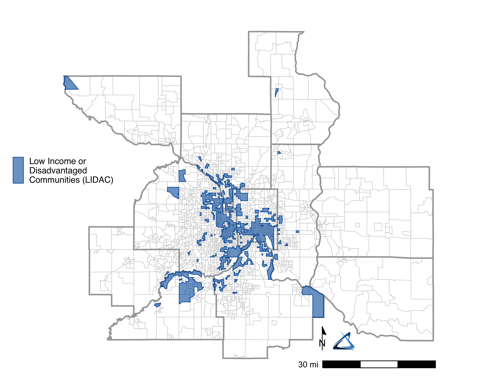
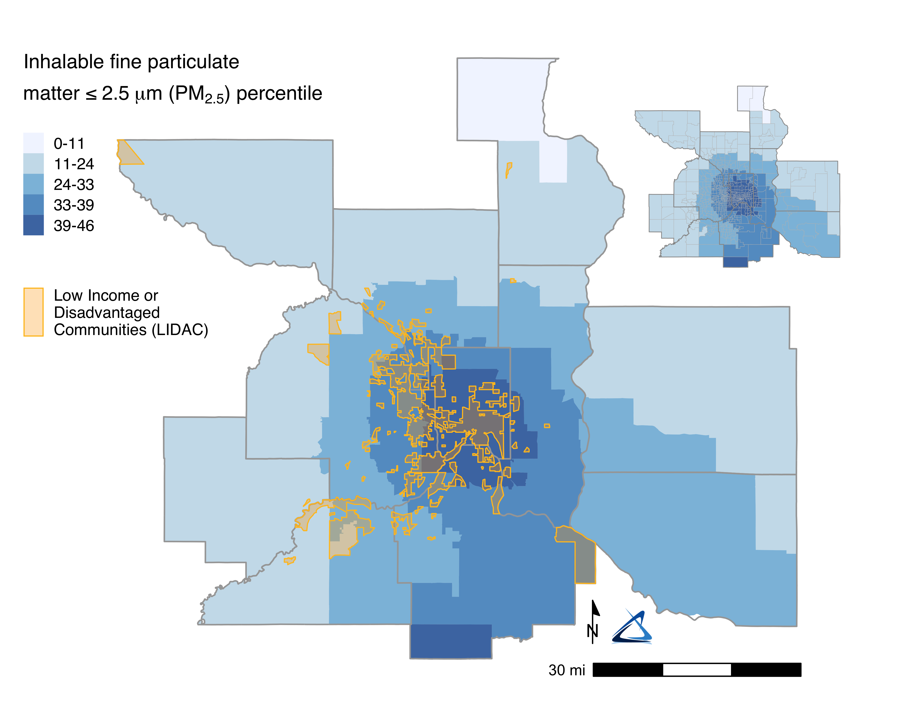
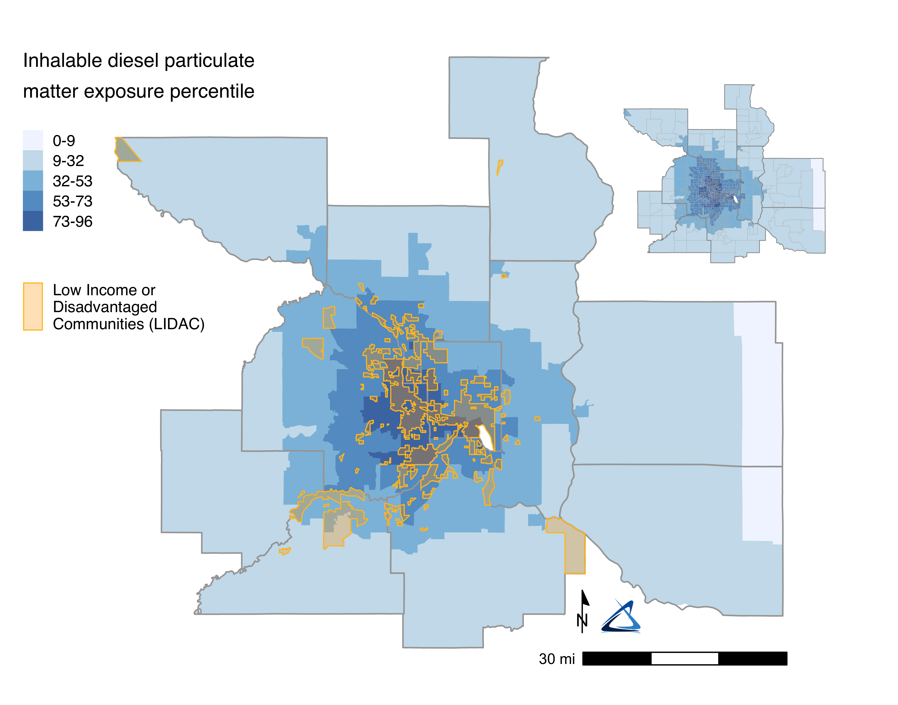
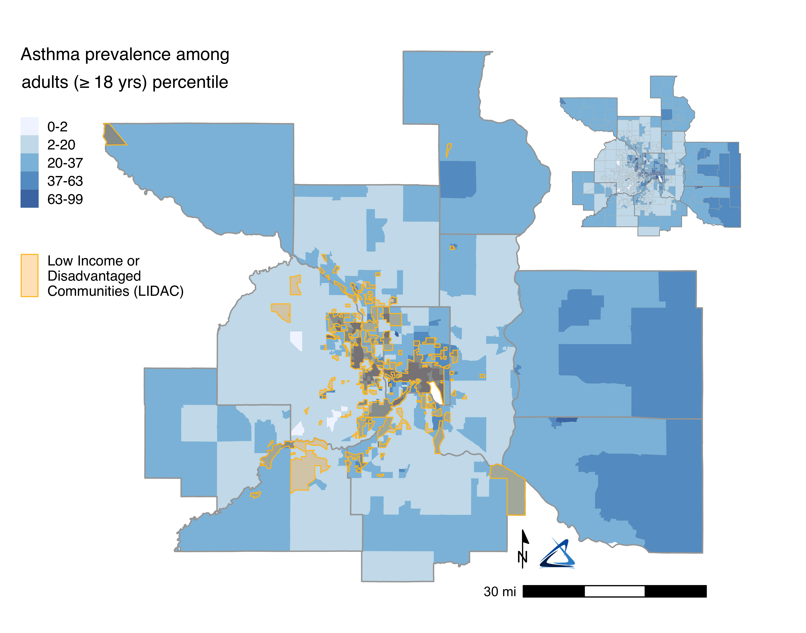
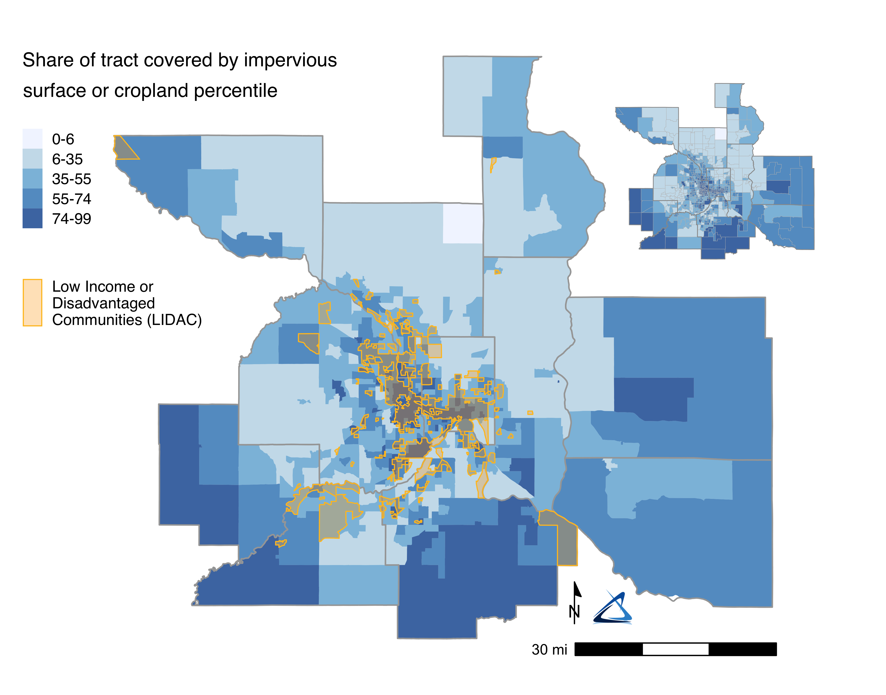
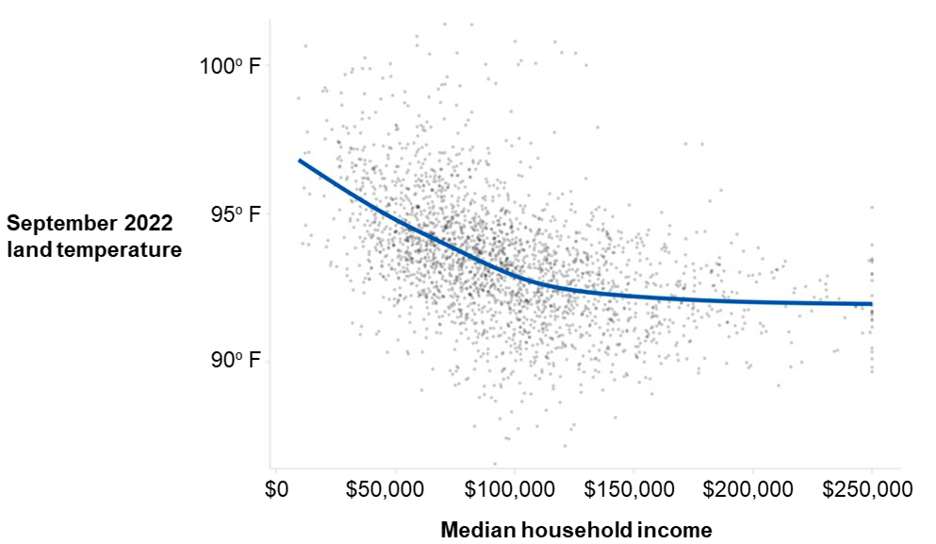
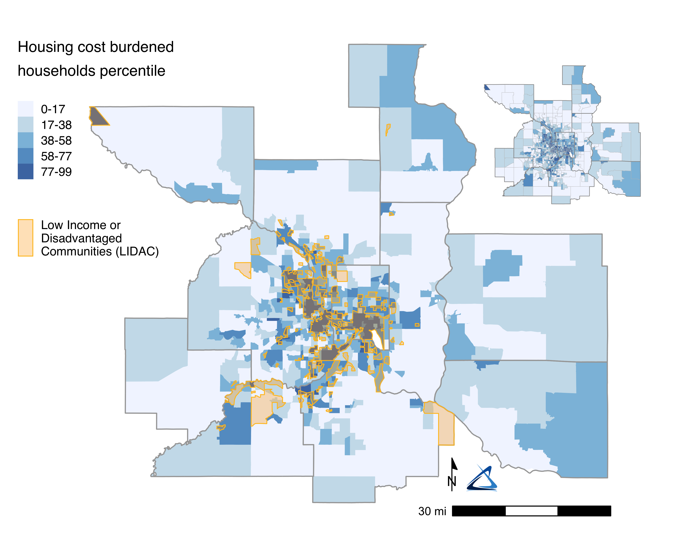
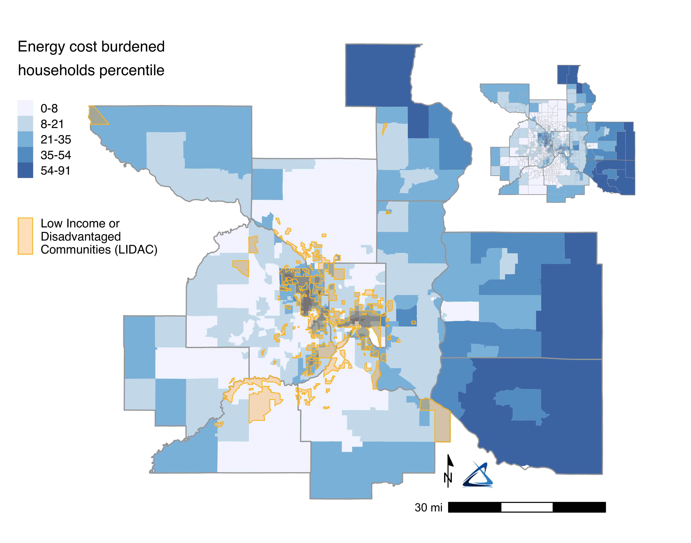

Appendix E — Low-Income and Disadvantaged Communities
Note
This page contains excerpts from the PCAP section on low-income and disadvantaged communities. See the full PCAP document for more information.
Everyone will be affected by climate change, but elderly people, households with low incomes, and communities that have faced historical and ongoing oppression and marginalization will be impacted most (including, but not limited to, Black, Indigenous, and communities of color). This PCAP recommends strategies that recognize the unique needs of these communities and work to identify and minimize potential adverse effects from climate change.
Geographies for Low Income and Disadvantaged Communities (LIDAC) were identified and downloaded directly from the EPA’s Inflation Reduction Act Disadvantaged Communities Map. These communities are identified based on the following criteria:
- Any census block group at or above the 90th percentile for any of EJScreen’s Supplemental Indexes when compared to the nation or state
- And/or any tribal lands category in EJScreen
By using the data from this tool, 659 LIDAC block groups were identified. Approximately 817,000 (24%) of residents in the 11-county area are living in LIDAC block groups. These areas are primarily located in eastern Hennepin County and southern Ramsey County, centered in the cities of Minneapolis and Saint Paul.
LIDAC designated areas are substantially more racially and ethnically diverse than the rest of the 11-county area. About 54% of people living in LIDAC-designated block groups are Black, Indigenous, or people of color (BIPOC), compared to 19% in non-LIDAC communities. Black, Indigenous, and people of color comprise a much larger share of the population in LIDACs.
On average, life expectancy in LIDACs is significantly lower; PM2.5 air pollution and diesel particulate exposure is significantly higher; homes are more likely to have lead paint; air toxics, superfund and hazardous chemicals and waste sites are more likely to be present; impervious surfaces comprise more of the area; and housing and energy cost burden is significantly higher. 1 The historical disenfranchisement of these communities resulting in these outcomes underscores the importance of focusing emissions reductions efforts in LIDACs.
LIDACs are substantially more likely to be in places with higher levels of PM2.5 fine particulate air pollution. Exposure to these particles is associated with respiratory injury including asthma, respiratory inflammation, pneumonia, chronic obstructive pulmonary disease, lung cancer, increased mortality, and a host of other health hazards (Nan et al. 2023).

LIDACs are also substantially more likely to be in places with higher levels of diesel particulate exposure. Diesel exhaust has been linked to airway inflammation, vascular dysfunction, developmental toxicity, neuroinflammation, respiratory mortality, and is carcinogenic to humans (Weitekamp et al. 2020). Most diesel particulate exposure is the result of commercial trucking; the greenhouse gas inventory in this report totaled over 869 million commercial vehicle miles traveled.2

Given the long-term exposure to fine particulates, it is not surprising that many LIDACs are in places with the highest percentiles of asthma prevalence of asthma among adults.

LIDACs are among the most likely places to have more impervious surface as a share of the tract land area. These conditions make areas hotter and can result in higher energy costs to cool residents.3

Past research at the Met Council has also shown that individuals with low incomes are more likely to live in areas with less tree cover and more impervious surfaces compared to wealthier individuals and experience hotter temperatures.4 As shown in Figure fig-land-temp-by-hh-income, households with median household incomes less than $100,000, particularly the lowest income households, are more likely to experience the highest temperatures during heat waves with several degrees difference between the hottest and coolest areas in the metro. The Met Council’s extreme heat tool can be accessed here.

A household that pays more than 30% of their income toward housing is considered housing cost-burdened. People living in LIDACs are much more likely to be cost burdened.

LIDACs are more likely to be in areas with the highest percentiles for energy cost-burden. Households with high energy cost-burden are also located in the most rural portions of the region.

Nan, Nan, Zhipeng Yan, Yaru Zhang, Rui Chen, Guohua Qin, and Nan Sang. 2023. “Overview of PM2.5 and Health Outcomes: Focusing on Components, Sources, and Pollutant Mixture Co-Exposure.” Chemosphere 323 (May): 138181. https://doi.org/10.1016/j.chemosphere.2023.138181.
Weitekamp, Chelsea A., Lukas B. Kerr, Laura Dishaw, Jennifer Nichols, McKayla Lein, and Michael J. Stewart. 2020. “A Systematic Review of the Health Effects Associated with the Inhalation of Particle-Filtered and Whole Diesel Exhaust.” Inhalation Toxicology 32 (1): 1–13. https://doi.org/10.1080/08958378.2020.1725187.